După crearea unui formular, poate doriți să-i modificați aspectul.
Formatarea formularelor vă poate ajuta să vă faceți baza de date mai consistentă și mai profesionistă.
Unele modificări de formatare pot chiar face formularele dvs. mai ușor de utilizat.
Cu instrumentele de formatare din Access, vă puteți personaliza formularele pentru a arăta exact așa cum doriți.
În această lecție, veți învăța cum să adăugați butoane de comandă,
să modificați aspectul formularelor, să adăugați sigle și alte imagini și să schimbați culorile și fonturile formularelor.
Access oferă mai multe opțiuni care vă permit să vă faceți formularele să arate exact așa cum doriți.
În timp ce unele dintre aceste opțiuni, cum ar fi butoanele de comandă, sunt unice pentru formulare, altele vă pot fi familiare.
Dacă doriți să creați o modalitate prin care utilizatorii formularului să efectueze rapid anumite acțiuni și sarcini,
luați în considerare adăugarea butoanelor de comandă.
Când creați un buton de comandă, specificați o acțiune pe care să o efectueze atunci când faceți clic.
Prin includerea comenzilor pentru sarcini comune chiar în formularul dvs., faceți formularul mai ușor de utilizat.
Access oferă mai multe tipuri de butoane de comandă, dar acestea pot fi împărțite în câteva categorii principale:
-
Butoane de comandă Navigare înregistrări, care permit utilizatorilor să se deplaseze în înregistrările din baza de date
-
Butoanele de comandă de operare înregistrare, care permit utilizatorilor să facă lucruri precum salvarea și imprimarea înregistrărilor
-
Butoanele de comandă de operare formular, care permit utilizatorilor să deschidă sau să închidă rapid un formular, să imprime formularul curent și să efectueze alte acțiuni
-
Butoane de comandă Raport Operare,
care oferă utilizatorilor o modalitate rapidă de a face lucruri precum previzualizarea sau trimiterea prin e-mail a unui raport din înregistrarea curentă
-
În vizualizarea Aspect formular, selectați fila Design, apoi localizați grupul Controale.
-
Faceți clic pe comanda Buton.
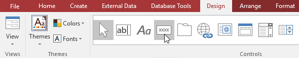
-
Alegeți locația dorită pentru butonul de comandă, apoi faceți clic pe mouse.
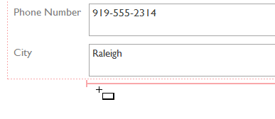
-
Va apărea expertul pentru butonul de comandă.
În panoul Categorii, selectați categoria de buton pe care doriți să o adăugați.
Dorim să găsim o modalitate de a trece mai rapid la anumite înregistrări, așa că vom alege categoria Navigare înregistrări.
-
Lista din panoul Acțiuni se va actualiza pentru a reflecta categoria aleasă.
Selectați acțiunea pe care doriți să o efectueze butonul, apoi faceți clic pe Următorul.
În exemplul nostru, vom alege Find Record.
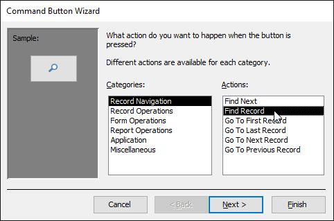
-
Acum puteți decide dacă doriți ca butonul să includă text sau o imagine. O previzualizare live a butonului va apărea apoi în stânga.
-
Pentru a include text, selectați opțiunea Text, apoi introduceți cuvântul sau expresia dorită în caseta de text.
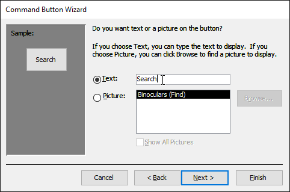
-
Pentru a include o imagine , selectați opțiunea Imagine.
Puteți decide să păstrați imaginea implicită pentru acel buton de comandă sau să selectați o altă imagine.
Faceți clic pe Afișați toate imaginile pentru a alege dintr-o altă pictogramă butonului de comandă sau Răsfoiți pentru a alege o imagine de pe computer.
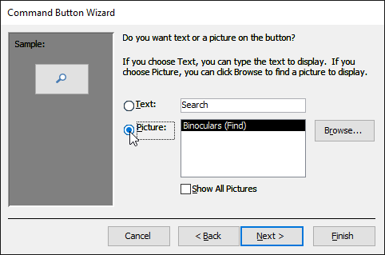
-
Când sunteți mulțumit de aspectul butonului de comandă, faceți clic pe Următorul.
-
Introduceți un nume pentru butonul.
Acest nume nu va apărea pe buton, dar cunoașterea numelui vă va ajuta să identificați rapid butonul
dacă doriți vreodată să-l modificați cu Fișa de proprietate.
După ce adăugați numele butonului, faceți clic pe Terminare.
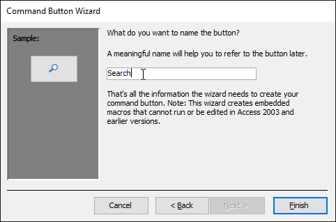
-
Comutați la vizualizarea formular pentru a testa noul buton. Butonul nostru Căutare deschide caseta de dialog Găsiți și înlocuiți.
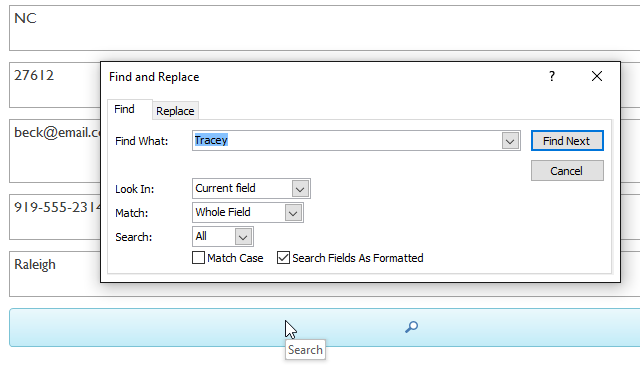
Când creați un formular, Access aranjează componentele formularului într-un aspect implicit în care câmpurile sunt stivuite bine unul peste altul,
toate exact de aceeași lățime. Deși acest aspect este funcțional, este posibil să descoperiți că nu se potrivește cel mai bine informațiilor dvs.
De exemplu, în formularul de mai jos, majoritatea câmpurilor sunt aproape complet goale, deoarece datele stocate acolo nu ocupă mult spațiu.
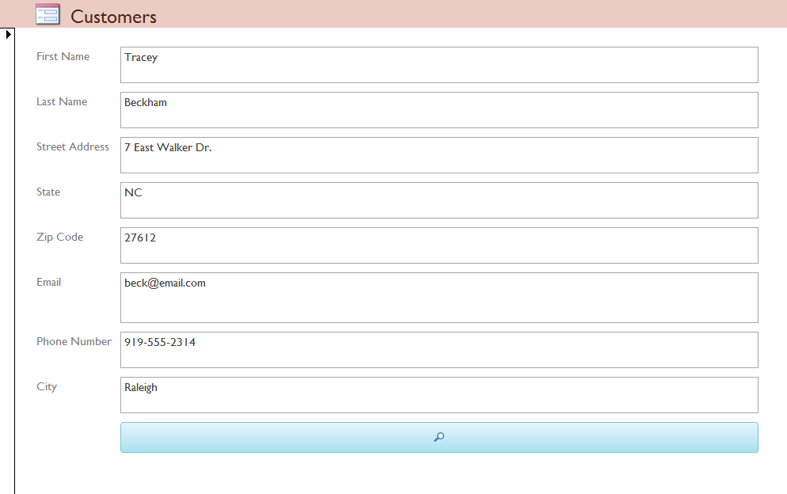
Formularul s-ar potrivi mai bine cu datele dacă am micșora câmpurile și butoanele de comandă și chiar dacă am pune unele dintre ele unul lângă altul.
Cu toate acestea, cu aspectul implicit, nu veți putea să puneți două câmpuri unul lângă celălalt sau să redimensionați un câmp sau un buton fără
a le redimensiona pe toate. Acest lucru se datorează faptului că Access aliniază componentele formularului în rânduri și coloane.
Când redimensionați un câmp, redimensionați cu adevărat coloana care îl conține.
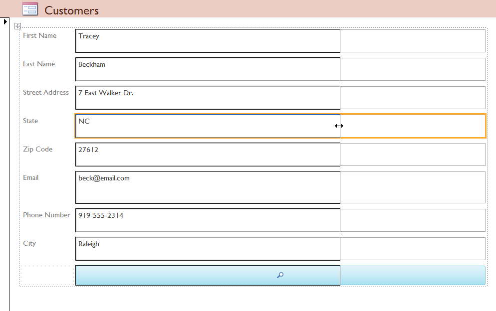
Pentru a redimensiona și rearanja câmpurile în modul dorit, va trebui să modificăm aspectul formularului.
Deoarece aspectul implicit pentru formularul nostru conține doar două coloane -
una pentru etichetele câmpurilor și alta pentru câmpuri - ar trebui să creăm o nouă coloană pentru a pune două câmpuri unul lângă altul.
Putem face acest lucru folosind comanda din fila Aranjare,
care conține toate instrumentele de care vom avea nevoie pentru a personaliza aspectul unui formular.
Dacă ați creat și modificat vreodată tabele în Microsoft Word, știți deja cum să utilizați majoritatea acestor instrumente.
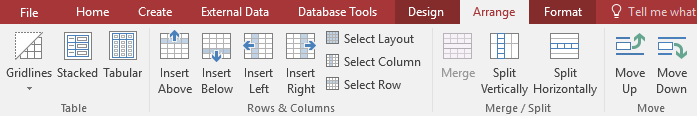
-
Comutați la vizualizarea Aspect.
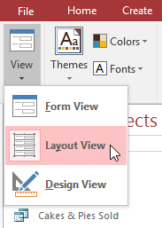
-
Selectați câmpul sau butonul pe care doriți să-l redimensionați, apoi treceți mouse-ul peste margine.
Cursorul dvs. va deveni o săgeată cu două fețe.
-
Faceți clic și trageți mouse-ul pentru a redimensiona obiectul selectat.
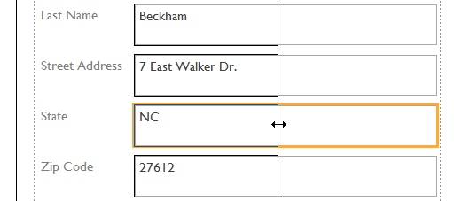
-
Câmpul sau butonul va fi redimensionat, la fel și orice alt element aliniat cu acesta.
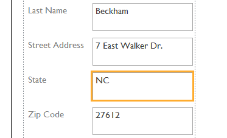
-
Dacă este necesar, adăugați coloane sau rânduri pentru a face loc câmpului sau butonului pe care doriți să îl mutați folosind comenzile
Inserare din grupul Rânduri și coloane.
În exemplul nostru, dorim să mutăm câmpul Nume la dreapta câmpului Prenume,
așa că va trebui să creăm două coloane noi la dreapta: una pentru eticheta câmpului și una pentru câmpul în sine.
Pentru a face acest lucru, vom face clic pe comanda Insert Right de două ori.
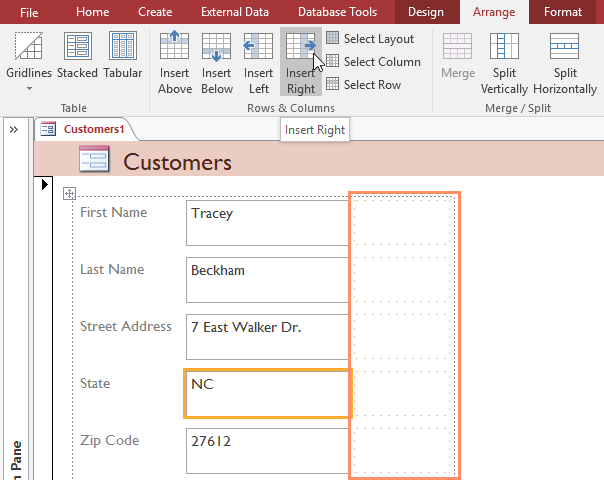
-
Faceți clic și trageți câmpul sau butonul în noua locație. Dacă mutați un câmp, asigurați-vă că mutați și eticheta câmpului.
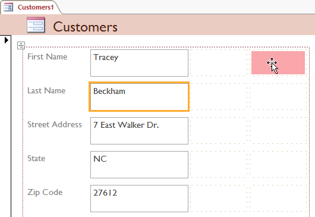
-
Repetați pașii de mai sus pentru orice alte câmpuri sau butoane pe care doriți să le mutați.
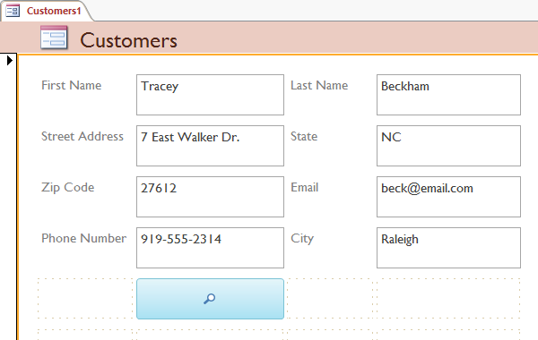